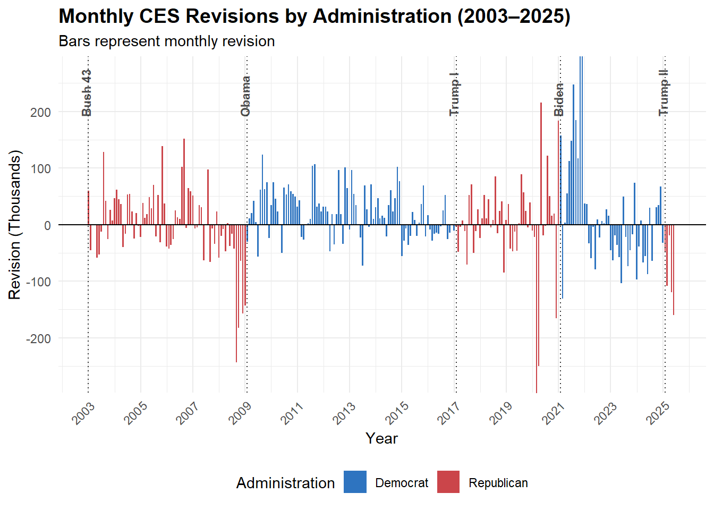

This analysis examines the U.S. Bureau of Labor Statistics (BLS) Current Employment Statistics (CES) data, combined with historical revision records, to evaluate the quality and systematic bias of the initial Total Payroll estimates over a 47-year period (1979–2025). The project specifically focuses on the difference between the first reported employment estimate and the final, after revisions.
Introduction to the BLS and CES Dataset
Datasets
For this project, I will be using two datasets from the BLS:
The BLS is an independently operated organization within the US Department of Labor and is run by a Senate-appointed commissioner. This organization collects key economic data such as inflation, employment, unemployment, and pay.
How is the CES data collected?
The CES is collected by the BLS through a large variety of survey methods like phone calls, internet surveys, and even through automatic transfers for larger companies. This survey includes questions on monthly employment, profit, and labor hours. It’s important to note that since the surveys are voluntary for most states, the initial monthly numbers are considered preliminary.
What are revisions?
Consequently, the BLS releases revisions as they collect more data throughout the following months and use statistical analysis for seasonal adjustments. After the preliminary numbers are released, two monthly revisions follow in the subsequent two months. Lastly, a final comprehensive annual revision is released in February.
Current relevance
On August 2025, President Donald Trump fired the commissioner Erika McEntarfer claiming “today’s Jobs Numbers were RIGGED” and accusing her of manipulating the numbers before the Presidential Election.
Setting up the project
This code chunk includes:
creating a designated folder for the datasets, ensuring to only download if it does not exist
Using a similar method as the previous task, I downloaded the revisions data for each month from January 1979 to July 2025. I will only be using the final revision out of the three for my analysis.
Data cleaning notes:
specify the code to start extracting starting the 4th row to remove headers.
change the value datatype into numerical.
remove NA date from 2025
reformat date to match the first dataset
combine all the columns into one dataset
Code
# ---- Task 2 Download CES Revisions Tables ----get_bls_ces_revisions <-function(start_year=1979, end_year=2025) { fname <-file.path("data", "mp04", "ces_revisions.csv") YEARS <-seq(start_year, end_year) if (!file.exists(fname)) { revision_tables <-map(YEARS, .progress =TRUE, possibly(function(yy) {# Use Sys.sleep inside the map function for polite scrapingSys.sleep(1) resp <-request("https://www.bls.gov") |>req_url_path("web", "empsit", "cesnaicsrev.htm") |>req_headers(`User-Agent`="Mozilla/5.0 (Macintosh; Intel Mac OS X 10.15; rv:143.0) Gecko/20100101 Firefox/143.0") |>req_error(is_error = \(resp) FALSE) |>req_perform() page <-resp_body_string(resp) |>read_html()# --- FIND THE TABLE & CLEAN DATA --- selector <-paste0("table[id='", yy, "']") # Use yy (current year) target_node <- page |>html_element(selector)# Data cleaning pipe target_node |>html_table(header =FALSE, fill =TRUE) |>slice(4:15) |># 1. Exclude 3 header rowsmutate(across(c(X3, X5, X8), ~as.numeric(gsub(",", "", .))) ) |># 2. Filter out rows for partial year data in 2025 filter(!is.na(X8), X8 !=0) |>mutate(date =ym(paste(yy, X1))) |>#date formattingselect( date,original = X3,final = X5,revision = X8) })) |>bind_rows() # Combine all individual dataframeswrite_csv(revision_tables, fname) }read_csv(fname, show_col_types =FALSE)}REVISIONS_DATA <-get_bls_ces_revisions()
Finalized Dataset
Now that both total employment level and the revisions datasets are cleaned and downloaded, I joined them using the date column.
Visualization 1 : Total Employment Level Over Time
To start, let’s explore how the the total employment level has changed since 1979.
Code
# Calculate the month-over-month change and determine the bar colorpayroll_data_for_plot <- BLS_JOINED |>arrange(date) |>mutate(change = level -lag(level),# Determine the direction for coloringdirection =case_when(is.na(change) ~"Neutral", # first row change >=0~"Increase", # positive change change <0~"Decrease"# negative change ) ) |># Drop the first row which has NA for 'change'filter(direction !="Neutral")# plotting cumulative bar chartggplot( payroll_data_for_plot, aes(x = date, y = level, fill = direction)) +geom_col(width =25) +# Set bar width appropriately for monthly datascale_fill_manual(values =c("Increase"="#5CB85C", "Decrease"="#D9534F"),name ="Change"# Legend Title ) +labs(title ="U.S. Total Nonfarm Payroll Employment Level Over Time",subtitle ="Bar Color Indicates Month-over-Month Change",x ="Year",y ="Employment Level (Thousands)" ) +theme_minimal() +theme(legend.position ="bottom",plot.title =element_text(face ="bold") )
Findings: While there has been multiple time periods of decrease in total employment, over all total level has grown over time.
Task 4: Statistical Inference
These statistics are featured in Task 5!
Task 5: Fact Checks of Claims about BLS - Claim 1
Claim 1: abnormal negative revision trend
E.J. Antoni : American economist, chief economist of the Heritage Foundation, and President’s Trump recommendation to be the next BLS commissioner.
Claim : “Large downward revisions became a trend under Biden and are continuing. To be clear, revisions are a normal part of the monthly job reports, but they became abnormal during the last administration, and nothing was done to fix the problem.”
Before running a statistical inference using the prop_test, let’s review some exploratory data analysis
Visualization 2 : CES Revisions Boxplot
Let’s take a look at how the revisions range at large.
Code
library(plotly)library(crosstalk)# Calculate the average magnitude of the revision for each yearCES_ACCURACY <- BLS_JOINED |>mutate(accuracy_measure =abs(revision))|>mutate(Year =year(date))# Creating Decade columnrevision_whiskers <- CES_ACCURACY |>mutate(Decade =paste0(floor(Year /10) *10, "s")) |>select(Year, revision, Decade)# links the filter and the plotshared_ces <- SharedData$new(revision_whiskers)# box and whiskers plotboxplot_interactive <-plot_ly( shared_ces, x =~Year, y =~revision, type ="box",color =I("lightblue"), # Fill colorline =list(color ="#2c3e50"), # Line colorname ="Revisions",hoverinfo ="y+x"# Hover info: Show specific details) |>layout(title ="Interactive Distribution of Monthly CES Revisions",yaxis =list(title ="Revision Magnitude (Thousands)"),xaxis =list(title ="Year",tickmode ="linear"# Forces integer ticks for years ),showlegend =FALSE )# Filter and Layout# bscols() arranges the Dropdown and the Plot side-by-side or stackedrevision_whiskers_dashboard <-bscols(widths =c(4, 8), # Full width for both elements# Inputfilter_select(id ="decade_filter", label ="Filter by Decade:", sharedData = shared_ces, group =~Decade,multiple =TRUE# allows viewer to select multiple decades ),# Output boxplot_interactive)# 6. Render the dashboardrevision_whiskers_dashboard
Findings: When the filter is set to all decades, we can see that around the 1990s, the magnitude of revisions decreased with the exception of 2008/2009 and 2020/2021.
Statistic 1 : Mean Percent Error of Revision Magnitude by Year
Let’s take a look at the average revision percent error for each year to get a better understanding of how the value changes over time.
Code
# Calculate Absolute Percentage Erroraccuracy_trend_data <- BLS_JOINED |>filter(date !="2020-03-01"& date !="2020-04-01") |># Filtering Covid outliers mutate(revision_pct =abs(revision) / level ) |>mutate(Year =year(date)) |>group_by(Year) |>summarise(`Mean Error %`=mean(revision_pct, na.rm =TRUE),.groups ='drop' )|>arrange(desc(Year))#Data tableaccuracy_trend_data |>datatable(options =list(searching=FALSE,ordering =TRUE,dom ='tip'), #removes the 'show # entries'rownames =FALSE,caption ='Average Magnitude of CES Revisions by Year (% of Total Employment)',width ='350px') |>formatPercentage('Mean Error %', digits =3)
Findings : The table shows that since 1979, the general percent error has decreased over time. Let’s visualize this to better understand how percent error changes over time.
Visualization 3 : Percent of Revision Error Over Time
Code
library(scales)accuracy_detail_data <- BLS_JOINED |>filter(date !="2020-03-01"& date !="2020-04-01") |>mutate(revision_pct =abs(revision) / level )# Scatter Plot with Smoothing Trendggplot(accuracy_detail_data, aes(x = date, y = revision_pct)) +geom_point(color ="gray70", alpha =0.5, size =1) +geom_smooth(method ="loess", span =0.2, color ="#2c3e50", fill ="lightblue") +scale_y_continuous(labels =percent_format(accuracy =0.01)) +scale_x_date(date_breaks ="5 years", date_labels ="%Y") +labs(title ="Percent of Revision Error Over Time (1979–2025)",subtitle ="Metric: Absolute Revision as a % of Total Employment (Lower = More Accurate)",x ="Year",y ="Magnitude of Error (% of Total Jobs)" ) +theme_minimal() +theme(plot.title =element_text(face ="bold"),axis.text.x =element_text(angle =45, hjust =1) )
Findings: Since it shows that the percent error decreases, it indicates that the accuracy of the revisions are increasing over time, with the exception of COVID-19 dates.
Statistic 2: Top 10 Years with the Largest Revision Mean Magnitude
Code
# using CES_ACCURACY from viz #2# Calculate the average magnitude of the revision for each yearannual_accuracy_summary <- CES_ACCURACY |>group_by(Year) |>summarise(Mean_Revision_Magnitude =mean(accuracy_measure, na.rm =TRUE),.groups ='drop' ) |>rename('Revision Magnitude Mean'= Mean_Revision_Magnitude) |>slice_max(`Revision Magnitude Mean`, n =10)# Display the summarized dataannual_accuracy_summary |>datatable(options =list(searching=FALSE,ordering =TRUE,dom ='tip'), #removes the 'show # entries'rownames =FALSE,caption ='Average Magnitude of the Revision by Year') |>formatRound(columns ='Revision Magnitude Mean',digits =3 )
Findings: This table shows that most of the years with the largest magnitude are mostly from the 80s. Again with the exception of the pandemic and 2008 recession years, the table indicates that the accuracy of the preliminary data increased over time.
Visualization 4 : Monthly CES Revisions by Administration
Since the BLS started using a new probability-based sample design to make their monthly revisions in 2003, I will focus the analysis here.
Code
# ---- presidential timeline ---- presidents_party <- tidyr::expand_grid(year=1979:2025, month = month.name, president =NA, party =NA) |>mutate(president =case_when( (month =="January") & (year ==1979) ~"Carter",# BLS jobs reports come out on the first Friday, so February# is the first time a new president 'owns' the jobs number (month =="February") & (year ==1981) ~"Reagan", (month =="February") & (year ==1989) ~"Bush 41", (month =="February") & (year ==1993) ~"Clinton", (month =="February") & (year ==2001) ~"Bush 43", (month =="February") & (year ==2009) ~"Obama", (month =="February") & (year ==2017) ~"Trump I", (month =="February") & (year ==2021) ~"Biden", (month =="February") & (year ==2025) ~"Trump II", )) |> tidyr::fill(president) |>mutate(party =if_else(president %in%c("Carter", "Clinton", "Obama", "Biden"), "D", "R")) #---- merging president and revision data ---- # convert the text "January", "February" into numeric datespresidents_clean <- presidents_party |>mutate(month_num =match(month, month.name),date =make_date(year, month_num, 1) # Create YYYY-MM-DD ) |>select(date, president, party)plot_data_with_party <- BLS_JOINED |>filter(year(date) >=2003&year(date) <=2025) |>left_join(presidents_clean, by ="date") |># Set party order so Legend is Democrat first, Republican second mutate(party =factor(party, levels =c("D", "R")))# finds the first month for each presidentpresident_labels <- plot_data_with_party |>group_by(president) |>slice_min(date) |>ungroup() |>mutate(label_height =190) # Adjust y-position for the label#plotting!ggplot(plot_data_with_party, aes(x = date, y = revision)) +geom_col(aes(fill = party), width =20) +# president labelsgeom_text(data = president_labels, aes(x = date, y = label_height, label = president), hjust =0, vjust =0.2, angle =90, color ="gray30", fontface ="bold", size =3) +# indicate president shiftgeom_vline(data = president_labels, aes(xintercept = date), linetype ="dotted", color ="gray10", alpha =0.9) +geom_hline(yintercept =0, color ="black", linewidth =0.5) +scale_fill_manual(values =c("D"="#2E74C0", "R"="#CB454A"), labels =c("Democrat", "Republican"),name ="Administration" ) +scale_x_date(date_breaks ="2 years", date_labels ="%Y") +scale_y_continuous(labels =label_comma()) +coord_cartesian(ylim =c(-270, 270), clip ="on") +# zooms in, cutting off outlierslabs(title ="Monthly CES Revisions by Administration (2003–2025)",subtitle ="Bars represent monthly revision",x ="Year",y ="Revision (Thousands)" ) +theme_minimal() +theme(plot.title =element_text(face ="bold", size =14),axis.text.x =element_text(angle =45, hjust =1),legend.position ="bottom" )

Findings: Visually, revisions below zero might incorrectly suggest a loss of jobs. It’s crucial to remember that both positive and negative revisions are simply indicators of the magnitude of error in the preliminary employment numbers. Additionally, the COVID-19 pandemic caused significant disruption, leading to unpredictable fluctuations in the revisions. Despite the increased volatility from the pandemic, Visual 3 and Statistic 2 suggest the BLS has largely managed to keep revisions within their historical range.
Statistic 3: Percent of Positive CES revisions for each decade
Code
revision_fraction_by_decade <- BLS_JOINED |>mutate(Decade =floor(lubridate::year(date) /10) *10) |>group_by(Decade) |>summarise(Total_Revisions =n(),Positive_Revisions =sum(revision >0, na.rm =TRUE),Fraction_Positive = Positive_Revisions / Total_Revisions ) |>ungroup() |>select(Decade, Fraction_Positive) |>rename('Percent of Positive Revisions'= Fraction_Positive) datatable( revision_fraction_by_decade,options =list(dom ='t',ordering =FALSE),rownames =FALSE,caption ='Percent of Positive CES Revisions by Decade') |>formatPercentage(columns ='Percent of Positive Revisions',digits =1 )|>formatStyle('Percent of Positive Revisions',background =styleColorBar(c(0, 1), # Manually set the range from 0 to 1 (0% to 100%)'skyblue'#'rgba(70, 130, 180, 0.5)' ),backgroundSize ='80% 75%',backgroundRepeat ='no-repeat',backgroundPosition ='right' )
Findings: This table shows that at least 50% of revisions from decades 1980-2010 are positive. Note that 2020 is incomplete since the data hasn’t been collected yet, and the 1970s only include 1979.
Statistical Inference 1 : Negative Revisions by Political Party
Using the binomial proportion test, let’s see if the negative revisions proportion is higher during the Democratic administration than Republican.
Code
library(broom)library(knitr)# Calculate counts for by partyparty_revision_stats <- plot_data_with_party |>group_by(party) |>summarise(# Count of 'Successes' (Negative Revisions)n_negative =sum(revision <0, na.rm =TRUE),# Count of 'Trials' (Total Revisions)n_total =n(),# Calculate proportionprop_negative = n_negative / n_total )# Extract values for the testdem_counts <- party_revision_stats |>filter(party =="D")rep_counts <- party_revision_stats |>filter(party =="R")# Vector of "Successes" (Negative Counts)x_vector <-c(dem_counts$n_negative, rep_counts$n_negative)# Vector of "Trials" (Total Counts)n_vector <-c(dem_counts$n_total, rep_counts$n_total)# Run the Proportion Test# alternative = "greater" tests if the first group is > than the second stat_infer_negative <-prop.test(x = x_vector, n = n_vector, alternative ="greater")# Tidy the results into a data framestat_infer_negative_data <-tidy(stat_infer_negative)# formatting the data frame as a clean tablestat_infer_negative_data |># FIX: Pipe the selection directly into kableselect(estimate1, estimate2, statistic, parameter, p.value, method, alternative) |>kable(caption ="Two-Sample Proportion Test Results",digits =3, col.names =c("Estimate 1", "Estimate 2", "Chi-Sq", "Degrees of Freedom", "P-Value", "Method", "Alternative") )
Two-Sample Proportion Test Results
Estimate 1
Estimate 2
Chi-Sq
Degrees of Freedom
P-Value
Method
Alternative
0.382
0.512
4.076
1
0.978
2-sample test for equality of proportions with continuity correction
greater
Findings : Since the p value is 0.978 which is greater than 0.05, this tells us that there is no evidence that there are more negative revisions during the Democratic administration than Republican. Let’s try again to see if there is significance on a more specifc level.
Statistical Inference 2 : Negative Revisions Comparison Between Biden and Others
Using the binomial proportion test, let’s see if there is a higher negative revision proportion during the Biden administration than previous administrations.
Code
# Group by "Biden" vs "Everyone Else"biden_comparison_stats <- plot_data_with_party |># Create a binary categorymutate(comparison_group =if_else(president =="Biden", "Biden", "Other")) |>group_by(comparison_group) |>summarise(n_negative =sum(revision <0, na.rm =TRUE), # Count of Negative revisionsn_total =n(), # Total revisionspct_negative = n_negative / n_total # Calculate % for reference )# Extract values for the test# We want to test if Biden (Group 1) > Other (Group 2)biden_counts <- biden_comparison_stats |>filter(comparison_group =="Biden")other_counts <- biden_comparison_stats |>filter(comparison_group =="Other")# Vector of "Successes" (Negative Revisions)x_vector_biden <-c(biden_counts$n_negative, other_counts$n_negative)# Vector of "Trials" (Total Revisions)n_vector_biden <-c(biden_counts$n_total, other_counts$n_total)# Run the Test# alternative = "greater" checks if Biden's negative rate is HIGHER than Otherstest_result_biden <-prop.test(x = x_vector_biden, n = n_vector_biden, alternative ="greater")# Tidy the results into a data frametest_result_biden <-tidy(test_result_biden)# formatting the data frame as a clean tabletest_result_biden |># FIX: Pipe the selection directly into kableselect(estimate1, estimate2, statistic, parameter, p.value, method, alternative) |>kable(caption ="Two-Sample Proportion Test Results",digits =3, col.names =c("Estimate 1", "Estimate 2", "Chi-Sq", "Degrees of Freedom", "P-Value", "Method", "Alternative") )
Two-Sample Proportion Test Results
Estimate 1
Estimate 2
Chi-Sq
Degrees of Freedom
P-Value
Method
Alternative
0.479
0.434
0.165
1
0.342
2-sample test for equality of proportions with continuity correction
greater
Findings : Antoni claims that there is an abnormally negative revisions trend that started during the Biden Administration, but this proportion test has a p-value of 0.342, indicating that there is no significant evidence of this claim.
There is no evidence that an abnormal negative revision trend started during the Biden Administration.
Task 5: Fact Checks of Claims about BLS - Claim 2
Claim 2: When there are lower CES level changes, revisions are larger.
IMPORTANT: This is a fake claim to use both the absolute levels and revisions. This claim uses information from commentary by Binyamin Appelbaum, lead writer on economics and business for The Times.
“Over the last three months[Aug. 1, 2025], after revisions, the American economy added about 106,000 jobs — or less than a third of what is needed to keep pace with population growth. It’s the weakest three-month stretch since 2020”
Claim: “Since the recent levels have not been increasing to keep up with the pace of population growth, it’s causing the revisions to increase! Larger revisions indicate an increase of inaccuracy!”
Statistic 4 : 10 Most Extreme Monthly Net Level Changes
Code
# Calculate Month-over-Month job # Changejob_growth_data <- BLS_JOINED |>arrange(date) |>mutate(MoM_Change = level -lag(level),Direction =ifelse(MoM_Change >=0, "Job Gains", "Job Losses") ) |>filter(!is.na(MoM_Change)) # remove first month since no change)# highest changejob_growth_high <- job_growth_data |>slice_max(MoM_Change, n =5)# lowest changejob_growth_low <- job_growth_data |>slice_min(MoM_Change, n =5)|>arrange(desc(MoM_Change)) #purposely re-arranging order for final dtjob_growth_extremes <-bind_rows(job_growth_high, job_growth_low) |>mutate(MoM_Change =as.numeric(MoM_Change))job_growth_extremes |>select(-Direction)|>rename('Net Change'='MoM_Change')|>format_titles() |>datatable(options =list(dom ='t',searching =FALSE, info =FALSE),caption ='Net Job Gain/Loss Extremes') |>formatRound(c('Level','Original', 'Final', 'Net Change'), digits =0)|>formatStyle('Net Change',color =styleInterval(0, c('red', 'black')))
Findings: This table show how extreme COVID-19 and the 2008 recession impacted the CES level’s net change for months. Let visualize this information to grasp the larger picture.
Visualization 5 : Monthly Employment Net Change Over Time
Code
# Break Period for the Annotationcovid_start <-as.Date("2020-01-01")covid_end <-as.Date("2020-10-01")ggplot(job_growth_data, aes(x = date, y = MoM_Change)) +#grey covid breakannotate("rect", xmin = covid_start, xmax = covid_end, ymin =-Inf, ymax =Inf, # bar heightfill ="gray50", alpha =0.5) +#covid textannotate("text", x =as.Date("2015-01-01"), # Position text around 2015y =800, # Height (Adjust based on your max Y value)label ="COVID-19\nOutliers", color ="gray30", size =3, fontface ="italic", hjust =1) +# Right-align text so it ends near the arrow start#covid arrowannotate("curve",x =as.Date("2015-06-01"), # Start of arrow (near text)y =800, # Start height (same as text)xend =as.Date("2020-02-01"), # End of arrow (touching the grey bar)yend =600, # End height (pointing down towards data)arrow =arrow(length =unit(0.2, "cm")), # Add the arrowheadcurvature =-0.2, # Makes the line curvedcolor ="gray50") +geom_col(aes(fill = Direction), width =30) +geom_smooth(method ="loess", span =0.1, color ="grey20", se =FALSE, linewidth =0.7) +geom_hline(yintercept =0, color ="black", linewidth =0.5) +scale_fill_manual(values =c("Job Gains"="#5CB85C", "Job Losses"="#D9534F")) +scale_y_continuous(labels =label_comma()) +scale_x_date(date_breaks ="5 years", date_labels ="%Y") +# manually assigns the y axis valuescoord_cartesian(ylim =c(-900, 1000)) +labs(title ="Monthly Change in U.S. Nonfarm Payroll Employment (1979–2025)",subtitle ="Bars represent monthly net job gains/losses; Black line represents the growth trend",x ="Year",y ="Net Change in Jobs (Thousands)",fill ="") +theme_minimal() +theme(legend.position ="bottom",plot.title =element_text(face ="bold"),axis.text.x =element_text(angle =45, hjust =1) )
Findings: The employment level primarily shows an upward trajectory, with two major exceptions: the Global Financial Crisis (2008–2009) and the COVID-19 Pandemic (2020), which saw the most extreme and rapid job losses in the entire dataset.
Statistic 5: Largest revisions (positive and negative) in CES history
This table includes top 5 positive and top 5 negative extremes
Code
max_revision_row <- BLS_JOINED |>slice_max(order_by = revision, n =5) |>select(date, revision)min_revision_row <- BLS_JOINED |>slice_min(order_by = revision, n =5) |>select(date, revision)|>arrange(desc(revision))revision_extremes <-bind_rows(max_revision_row, min_revision_row)revision_extremes |>format_titles() |>datatable(options =list(dom ='t',ordering =FALSE),rownames =FALSE,caption ='Dates Corresponding to Extreme Monthly Payroll Revisions') |>formatStyle(columns ='Revision', # Base the color on this column's valuevalueColumns ='Revision', # Use this column's value for comparisontarget ='row', # Apply the style to the ENTIRE rowbackgroundColor =styleInterval(cuts =0, # The dividing line between colors is 0values =c('rgba(255, 0, 0, 0.2)', 'rgba(0, 255, 0, 0.2)')# Values[1] = Color if value <= 0 (Red)# Values[2] = Color if value > 0 (Green) ))
Findings: This reveals that the volatility from both the 2008 recession and the 2020 pandemic not only resulted in extreme changes in employment levels but also generated the largest magnitude revision errors.
Statistic 6 : Top 10 Largest Magnitude of Revisions
Code
revision_magnitude <- job_growth_data |>mutate(magnitude =abs(revision),level_change =abs(MoM_Change)) |>select(date, magnitude, level_change) |>arrange(desc(magnitude))# top 10 magnitudetop_magnitude <- revision_magnitude |>slice_max(magnitude, n =10)# Display the summarized datatop_magnitude |>format_titles()|>datatable(options =list(searching=FALSE,ordering =TRUE,dom ='t'), #removes the 'show # entries'rownames =FALSE,caption ='Largest Magnitude' ) |>formatRound(c('Magnitude','Level Change'), digits =0)
Findings: The largest magnitude of error in the preliminary data occurred during the COVID-19 pandemic and the early 1980s.
Visualization 6 : Absolute Value of Revisions Magnitude vs Absolute Value of Level Change
Code
ggplot(revision_magnitude, aes(x = level_change, y = magnitude)) +geom_point(color ="darkblue", alpha =0.6) +# Linear trend line to test the correlationgeom_smooth(method ="lm", color ="orange", linewidth =1, se =FALSE) +# Zoom in to exclude COVID outliers coord_cartesian(xlim =c(0, 1000), ylim =c(0, 300)) +labs(title ="Volatility vs. Magnitude of Revision",x ="Volatility - Absolute Size of Monthly Change",y ="Magnitude of Revision" ) +theme_minimal() +theme(plot.title =element_text(face ="bold"))
Findings : The orange line’s very slight upward slope indicates that the BLS is able to be consistent in their revision numbers regardless of major economy changes.
Statistical Inference 3 : Does level volatility cause larger revision magnitude?
Code
library(infer)# using revision_magnitude from stat 7volatility_test_data <- revision_magnitude |>mutate(# Split data into two groups based on the Median changeVolatility_Group =if_else(level_change >median(level_change, na.rm =TRUE),"Large Monthly Changes", "Small Monthly Changes") )# 2. Perform the Two-Sample t_test (Tidy Version)t_test_volatility <- volatility_test_data |>t_test(magnitude ~ Volatility_Group)# 2. Perform t_test and Format as Tablevolatility_test_data |>t_test(magnitude ~ Volatility_Group,order =c("Small Monthly Changes", "Large Monthly Changes"),alternative ="greater") |>kable(caption ="Two-Sample t-Test: Revision Magnitude by Volatility Group",digits =3, # Round numbers to 3 decimal placescol.names =c("T-Statistic", "Degrees of Freedom", "P-Value", "Alternative Hypothesis", "Estimate", "Lower CI", "Upper CI") )
Two-Sample t-Test: Revision Magnitude by Volatility Group
T-Statistic
Degrees of Freedom
P-Value
Alternative Hypothesis
Estimate
Lower CI
Upper CI
-2.033
460.388
0.979
greater
-10.705
-19.386
Inf
Findings: Since the p value is greater than 0.05, this indicates that there is no evidence that revisions are larger when there are little to no changes in level values.
The statistical analysis shows no evidence that revision increases as level values stay consistent. Additionally, the analysis shows that the accuracy of preliminary level values are not only relatively consistent but also have show a slight increase in accuracy over time.